1. Start with two shapes
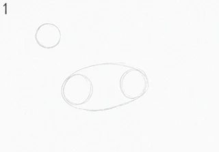
Draw a circle for the head and a long oval for the body, with a gap between them about one head wide. Keep the pressure light enough that you could rub it out with a finger. Everything that follows hangs off these two, so spend a moment on where they sit rather than on how they look.
2. Join them with a neck
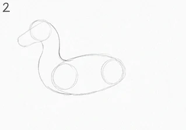
Two curved lines from the head down to the body, bowing the same way. A dragon neck isn't a tube of even width: make it narrow at the skull and widen it where it meets the shoulders, and the whole animal immediately reads as heavier at the front.
3. Four legs as sausages
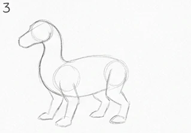
Upper and lower segments for each leg, drawn as overlapping ovals rather than straight lines. The back legs are thicker and fold further, like a bird of prey. Getting the joints roughly right now is far easier than correcting them once the outline is dark.
4. The tail, in one movement
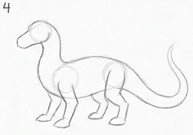
Start at the hip and let the line run off the page if it wants to. Draw it as a single sweep rather than a series of short strokes, because a tail is a continuous thing and the eye can tell when it was assembled out of pieces. Taper it towards the tip.
5. Wing bones before wing
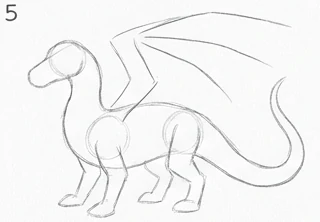
The common mistake here is drawing the membrane first. A dragon wing is an arm: shoulder, elbow, and long finger bones fanning out from it. Draw those four lines and the wing will look like it could move.
6. Stretch the membrane between the fingers
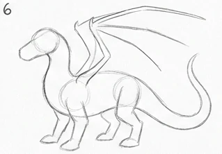
Scallop each section between the finger bones, letting the curve sag slightly rather than pulling it tight. Tight membranes look like an umbrella; a little slack looks like skin. The section nearest the tail runs back to the body rather than down to the ground.
7. Horns, brow and jaw
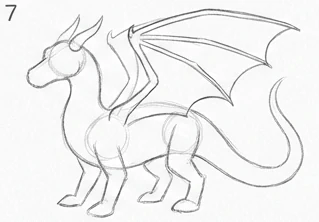
Two horns sweeping back from the top of the skull, a heavy brow over the eye socket, and a jaw line that runs further back than feels natural. The further back the jaw hinge sits, the more the head reads as a predator rather than a horse.
8. Give the face its expression
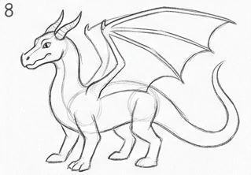
The eye goes under the brow, not in the middle of the head. Add the nostril high on the snout and a line for the mouth that turns down slightly at the back. This is the panel where the drawing stops being a shape and becomes an animal.
9. Feet and claws
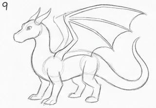
Three toes forward and one back on each foot, each one ending in a curved claw. Keep them short. Long spindly claws read as a lizard; short heavy ones carry the weight you've just drawn above them.
10. Spines and the belly line
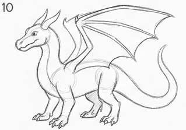
A row of spines from the back of the skull down to the tail tip, smallest at each end and largest over the shoulders. Then the belly: a series of soft horizontal bands, closer together where the body bends.
11. Go over the lines you are keeping
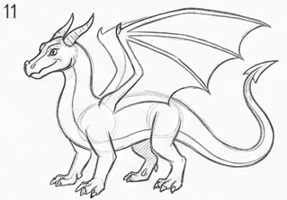
Now press harder, and only on the lines that are part of the finished animal. Work from the head outwards so your hand is never resting on a line you've just darkened. Leave the construction circles alone.
12. Clean up and check the silhouette
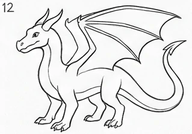
Rub out the construction shapes, then squint at the drawing until the detail disappears. If the silhouette still reads as a dragon, the drawing works. If it doesn't, the problem is in the shapes from step one, not in the detail you've just spent an hour on.